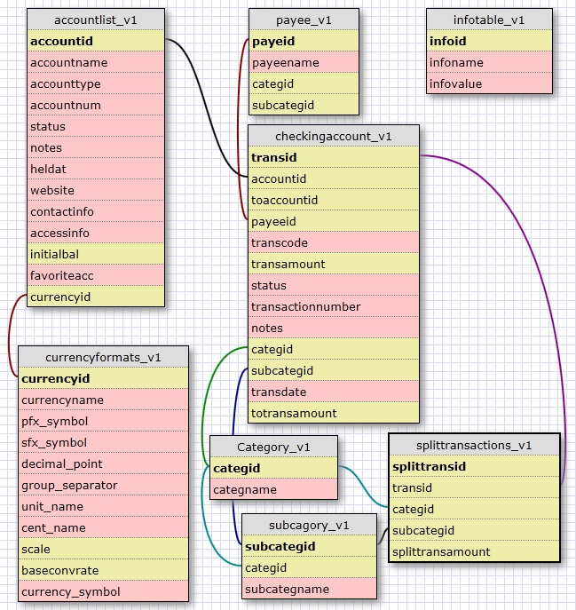

Custom SQL Reports |
Custom SQL reports allow the user to create a unique report to suite the user. This is achieved by writing an SQL script which communicates directly with the database.
Once the script is created, and saved in MMEX, the report can be easily accessed via the MMEX Navigation Tree.
The creation of a new Custom SQL Report is via:
The menu item: Tools –> Custom SQL Reports
The icon on the toolbar.
This action will open the Custom SQL Reports Manager dialog, and allows the user to directly write a script and save it as a file.
Useful Custom SQL Scripts are also available from the MMEX Forum on the Internet, which can be accessed as follows:
Use the menu option: Help –> Report Issues or Feedback
Search the forum heading: Custom SQL Report Scripts
Recommendations:
For new scripts, use a useful title for your report.
Save the script before running in the Custom
SQL Reports Manager.
Note: Script errors may
result in loss of your script if not saved first.
Use the pop-up menu on the navigation tree to edit the file if necessary.
|
Note: |
All script titles are saved in an index file called: CustomSQLReportIndex.txt |
|
|
Custom SQL Reports can be remove by deleting the index file. |
|
|
Reports can be reorganized by directly modifying the index file if necessary. |
Reports created by the Custom Reports Manager, will be permanently recorded in the Navigation Tree. The report is given a name when the report is saved. By using the report title, the user can:
Run the report
Edit the report
Delete the report.
A report title can be saved without an SQL script file attached. This is used as a title for grouping scripts together. The navigation tree then behaves similar to the standard reports. Reports can only be nested one level deep.
In order to create script files,
we need to understand the underlying structure of the database. This
structure is displayed as follows:
|
Basic Structure of MMEX |
|
 |
Table Information
This picture shows the table names with their associated fields, and the links that connect the tables via the table's primary index field.
|
Table Names |
Table Description |
|
InfoTable_V1 |
This contains settings specific to the database. |
|
CurrencyFormats_V1 |
Contains the Currency values for the database |
|
AccountList_V1 |
Contains all the account names, and data specific to an account. |
|
Payee_V1 |
Contains all payees, and the last category this payee used. |
|
Category_V1 |
This is a list of all the categories in the system |
|
SubCategory_V1 |
This is a list of all the sub-categories in the system |
|
CheckingAccount_V1 |
This is the main table where all the transactions are maintained. |
|
SplitTransactions_V1 |
Contains the data associated with Split Transactions |
|
Tables Not Shown |
|
|
Stock_V1 |
Used for Stocks, and is linked to table: AccountList_V1 using the HeldAt field |
|
Assets_V1 |
Contains all asset details |
|
BudgetYear_V1 |
The specific year for a budget |
|
BudgetTable_V1 |
Budget details |
|
BudgetSplitTransactions_V1 |
Split Transactions for budgets |
|
BillDeposit_V1 |
This contains all the details for Repeating Transactions. Similar to table: CheckingAccountV1 |
Attempting to teach SQL programming is beyond the scope of this help file, but the following is a quick guide into understanding scripts, and possibly creating your own scripts if required.
In creating scripts, the main command we would tend to use is the SELECT statement.
The basic format is:
|
SELECT <name> |
<name> represents the field names of the table, or * for all names. |
|
FROM <table> |
<table> represents the table or tables the command is aimed at. |
|
WHERE <condition is met> |
[optional] here we test for some condition. |
|
ORDER BY <parameter> |
[optional] sorts the output by this parameter |
Examples:
SELECT * FROM
AccountList_V1;
* This would display all fields for the table:
AccountList_V1
SELECT AccountName, Status
FROM AccountList_V1 where AccountType = “Term”;
*
This would display the Term Account names and the account status from
table: AccountList_V1
Here we describe a more
complex script:
|
Although this script is useless, it demonstrates some basic principles. |
|
select
pT.PayeeName payee, |
In this example we see the
table name is: payee_V1 and the field name is PayeeName
In
the FROM clause we see the table name: payee_V1 pT
*
Here the pT at the end, acts as an alias for the table name.
Now in the SELECT we see:
pT.PayeeName payee
* The pT. is used to
state the table that owns the field PayeeName
* The payee
at the end, is an alias for the table.fieldname combination
We
can separate table names and field names with commas, as we see more
tables and fields in this example.
In the WHERE clause, we
see: pT.categID = cT.categID
* Here we test to make sure the two
fields are the same in both tables.
Now in the ORDER BY clause, we can now use the simplified name of payee we defined in the SELECT clause.
I hope this short introduction
takes the mystery out of the script files as seen in the MMEX Forum
in the Custom SQL Report Scripts section.